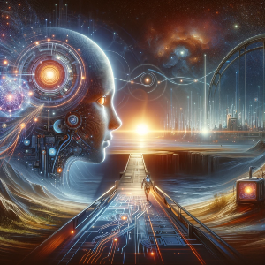
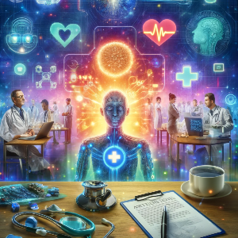
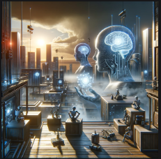

Introduction to AI: AI Bridge

Artificial Intelligence (AI) stands as a beacon of technological evolution, bridging the gap between what was once considered the realm of science fiction and our current reality. The adaptive nature of AI, coupled with its ability to learn and evolve from interactions, positions it as a foundational element for future innovations. As we integrate AI into various aspects of life and industry, it continues to expand the horizons of what's possible, pushing us towards a future where technology and human intellect converge in unprecedented ways.
Current Applications of AI: AI Role

The versatility of AI manifests across numerous domains, significantly enhancing customer service through the deployment of sophisticated chatbots and revolutionizing patient care with predictive analytics for diagnoses. This technological marvel is reshaping industries far and wide, redefining the boundaries of human-machine collaboration. From automating mundane tasks to providing insights that were previously unattainable, AI's role in the modern world underscores a significant shift in how we approach problems and solutions alike.
The Future Prospects of AI: City of AI

Standing on the cusp of a new era, AI harbors the promise of unlocking unparalleled potential in addressing complex global challenges. Its impending integration into daily life and across global industries signals the dawn of a new age characterized by heightened efficiency and innovation. Envision a future where AI not only enhances existing processes but also pioneers new avenues for development and creativity, propelling humanity forward into a world where technology and society evolve in harmony.
Ethical Considerations of AI: Ethical AI

The rapid ascent of AI has ushered in a host of pressing ethical dilemmas, particularly concerning privacy, autonomy, and the integrity of decision-making processes. As we navigate these complex issues, the imperative to harness AI's vast potential responsibly has never been more critical. Balancing technological advancement with ethical considerations requires a nuanced approach to ensure that AI development aligns with and upholds fundamental human values and rights, fostering an environment where technology serves humanity's best interests.
Impact on Employment: Jobs with AI

The influence of AI on the job market is profound and multifaceted, heralding a new wave of tech-driven roles while simultaneously streamlining operations through the automation of repetitive tasks. This paradigm shift necessitates a workforce evolution, where adaptability and a commitment to continuous learning become key survival skills. As AI reshapes the employment landscape, it prompts a reevaluation of job roles, skill requirements, and educational paradigms, ensuring that the workforce remains agile and equipped to thrive in an increasingly AI-driven world.